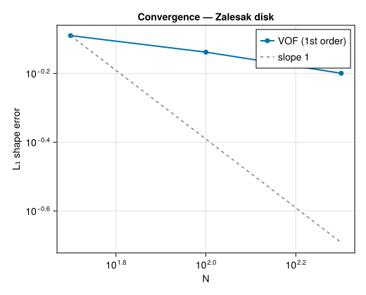

Zalesak Disk –- VOF Advection Test
Problem Statement
The Zalesak disk test Zalesak (1979) is a classic benchmark for Volume of Fluid (VOF) interface advection schemes. It is the first test any multiphase code should pass: a notched disk undergoes rigid-body rotation in a prescribed velocity field, and after one full revolution the disk must return to its initial position. Any deviation quantifies numerical diffusion and geometric distortion introduced by the advection algorithm.
What is VOF?
The Volume of Fluid method tracks a phase indicator $C(\mathbf{x}, t)$ defined in each cell:
- $C = 1$: liquid (or primary phase)
- $C = 0$: gas (or secondary phase)
- $0 < C < 1$: the cell contains the interface
The field $C$ is transported by the flow via an advection equation:
\[\frac{\partial C}{\partial t} + \nabla \cdot (C\,\mathbf{u}) = 0\]
In Kraken.jl, this equation is solved using directional splitting with a first-order upwind scheme: the $x$- and $y$-fluxes are computed separately, alternating the sweep direction each step to reduce directional bias. Because the scheme is written in conservative (flux) form, total volume is preserved to machine precision –- this is the key advantage of VOF over level-set methods.
Why this test matters
This test exercises only the VOF advection kernel –- no LBM flow solver, no surface tension, no collision operator. The velocity field is prescribed analytically (rigid rotation), so any error comes exclusively from the advection scheme. The notched disk is deliberately challenging: it has sharp corners at the slot edges that are rapidly smeared by numerical diffusion. Measuring how much the slot rounds off after one revolution directly quantifies the scheme's shape-preservation capability.
The prescribed velocity field for rigid rotation about $(x_0, y_0)$ is:
\[u_x = -\omega\,(y - y_0), \qquad u_y = \omega\,(x - x_0)\]
where $\omega = 2\pi / T$ is the angular velocity and $T$ is the period of one rotation.
Geometry
The notched disk of radius $R = 15$ sits at $(50, 75)$ in a $100 \times 100$ periodic box. The rectangular slot has width 5 and extends downward from the disk centre.

Simulation File
Download: zalesak.krk
Simulation zalesak D2Q9
Define N = 100
Define R = 15
Define cx = 50
Define cy = 75
Define w = 5
Define omega = 0.02
Domain L = N x N N = N x N
Physics nu = 0.1
Module advection_only
Velocity { ux = -(y - 50)*omega uy = (x - 50)*omega }
Initial { C = 0.5*(1 - tanh((sqrt((x-cx)^2 + (y-cy)^2) - R) / 2)) }
Boundary x periodic
Boundary y periodic
Run 314 stepsThe key directive is Module advection_only: it tells Kraken to skip the LBM flow solver entirely and only advect the VOF field using the prescribed Velocity block. This is the LBM analogue of the Gerris/Basilisk advection test.
Code
using Kraken
N = 100
R = 15.0
cx, cy = 50.0, 75.0
slot_w = 5.0
angular_vel = 2π / (N * π)
max_steps = round(Int, 2π / angular_vel) # one full rotation
function zalesak_init(x, y)
r = sqrt((x - cx)^2 + (y - cy)^2)
disk = 0.5 * (1 - tanh((r - R) / 2))
in_slot = abs(x - cx) < slot_w / 2 && y < cy && y > cy - R
return in_slot ? 0.0 : disk
end
velocity_fn(x, y, t) = (-(y - 50.0) * angular_vel, (x - 50.0) * angular_vel)
result = run_advection_2d(; Nx=N, Ny=N, max_steps=max_steps,
velocity_fn=velocity_fn, init_C_fn=zalesak_init)Results –- Before / After Comparison

After one complete revolution, the disk returns approximately to its original position. However, the sharp corners of the rectangular slot have been noticeably rounded by numerical diffusion –- a well-known limitation of first-order upwind VOF. The slot appears wider and shallower than the original. The outer disk boundary, being smooth, is much better preserved.
Shape Error Analysis
We quantify the error using the $L_1$ norm of the difference between the initial and final volume fraction fields, normalised by the total initial volume:
\[E_{L_1} = \frac{\sum_{i,j} |C_{i,j}(T) - C_{i,j}(0)|}{\sum_{i,j} C_{i,j}(0)}\]
L1_err = sum(abs.(result.C .- result.C0)) / sum(result.C0)
mass_err = abs(result.mass_history[end] - result.mass_history[1]) / result.mass_history[1]
nothing #hide
The error map reveals that the largest deviations occur at the slot corners, where the initial sharp 90-degree angles are smeared into smooth curves. The trailing edge of the disk (in the direction of rotation) also shows some diffusion. The interior of the disk and the exterior region remain essentially unchanged.
Convergence Study
To verify that the error decreases with grid refinement, we run the test at three resolutions ($N = 50, 100, 200$), scaling the geometry proportionally so that the disk always occupies the same fraction of the domain.
N_list = [50, 100, 200]
errors = Float64[]
for Ni in N_list
ω_i = 2π / (Ni * π)
steps_i = round(Int, 2π / ω_i)
cx_i, cy_i = Ni / 2, 3Ni / 4
R_i = 0.15 * Ni
w_i = 0.05 * Ni
init_i(x, y) = begin
r = sqrt((x - cx_i)^2 + (y - cy_i)^2)
disk = 0.5 * (1 - tanh((r - R_i) / 2))
in_slot = abs(x - cx_i) < w_i / 2 && y < cy_i && y > cy_i - R_i
in_slot ? 0.0 : disk
end
vel_i(x, y, t) = (-(y - Ni / 2) * ω_i, (x - Ni / 2) * ω_i)
res = run_advection_2d(; Nx=Ni, Ny=Ni, max_steps=steps_i,
velocity_fn=vel_i, init_C_fn=init_i)
push!(errors, sum(abs.(res.C .- res.C0)) / sum(res.C0))
end
The first-order upwind VOF scheme converges at approximately order 1: the error halves when the resolution doubles. This is expected from the directional-split upwind discretisation. Higher-order flux limiters (MUSCL, THINC) or unsplit geometric advection would improve this to second order, but are not yet implemented in Kraken.jl.
Mass Conservation
Regardless of the shape error, the directional-split advection is inherently conservative: total volume fraction $\sum C$ is preserved to machine precision ($\sim 10^{-15}$ relative error) at all resolutions. This is a fundamental property of the flux-based VOF formulation and holds even for the first-order scheme.
References
- Zalesak (1979) –- Fully multidimensional flux-corrected transport algorithm for fluids
- Rider & Kothe (1998) –- Reconstructing volume tracking